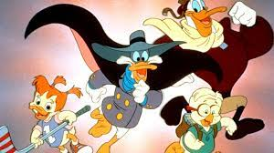

About Darking Duck
Darkwing Duck, who's catchphrase "Let's get dangerous" is brilliantly embedded into the hearts of 90's kids everywhere, is a masked duck who fights crime. His cover persona is Drake Mallard and he has an adopted daughter named Gosling. His sidekick, Launchpad is always there for comedic relief.
Darking Duck and his crew.
Characteristics
- Defender of Cape Carnard
- "Suck gas, Evildoer!"
- Caring father
Darkwing's Associates
Darking has a few important characters in his life. Click to read more